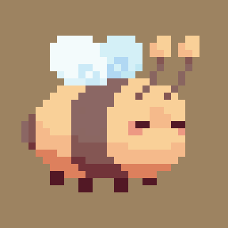
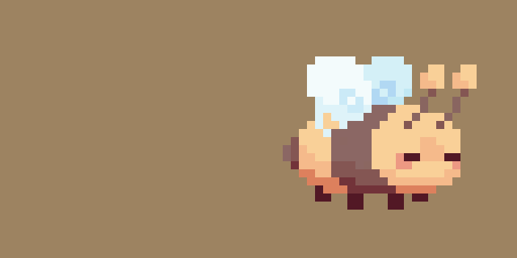
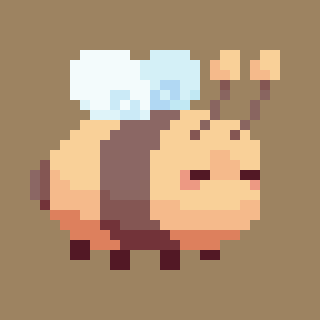
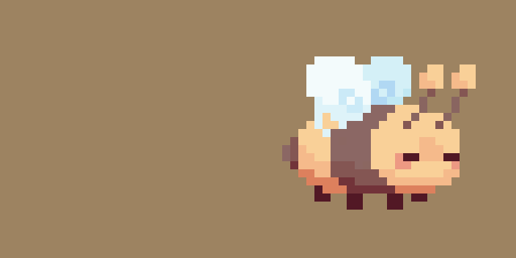
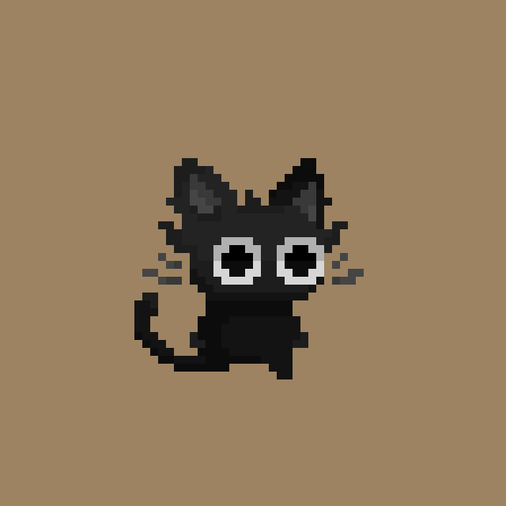
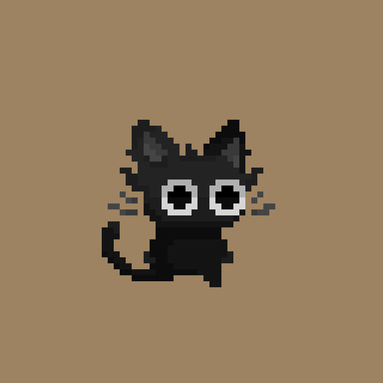

Projects
Game Development Projects
Booping Beep – 2D Endless Runner
Created in a 75-hour time limit for a game jam, Booping Beep is a fast-paced 2D endless runner, heavily inspired by Jetpack Joyride. Players control a bee named Beep, where they dodge through obstacles and collect power-ups.
I worked in a small team of four to help bring this game to life. My main contributions were creating the bee sprites and animations, along with the power-ups in Aseprite, and integrating these animations smoothly into Unity. I was in charge of overseeing all the art done and providing direction and assistance for the team. Additionally, I helped with debugging projectiles and power-up interactivity.
We were able to showcase Booping Beep to an open audience, where players tested the game and provided encouraging feedback that helped us refine our ideas further and keep developing! Images/Gifs of my work are available on this page.
 



Sntruggled – VR FPS Zombie Survival
Sntruggled, a play of words on snuggled and struggled, is a VR FPS zombie survival game, inspired by Call Of Duty: Zombies, developed for a VR Lab at Cal Poly Pomona. Over the couse of four months, our team of four created an immersive VR experience where players explore an environment while fending off quirky, cat-like enemies.
My main contributions included implementing player movement with the XR Toolkit, integrating enemy animations, implementing enemy AI, and adding 3D spatial audio for immersion within Unity. We collaborated weekly to review progress and to receive guidance from our mentors. Please see the video on this page for a demo of Sntruggled!
We showcased Sntruggled to an open audience, where players tested the game and provided valuable feedback that improved our final version. The presentation was a great opportunity to engage with the audience and share our development process. A demo video of Sntruggled is available on this page.
The Adventure of Hammy – 2D Narrative Adventure (in progress)
The Adventure of Hammy is an independently developed 2D narrative adventure exploring long-distance relationships. Players navigate an action-filled environment that represents long-distance relationships through narrative and environmental storytelling.
I have implemented core gameplay mechanics in Unity C#, including player movement, directional attacks, and health/stamina/healing systems. I also created and animated sprites for these mechanics, ensuring clear visual feedback for the player.
The project is a work in progress, with additional mechanics and a branching dialogue system currently in development. A preview video of the project is available on this page.
Fitch – 2D Metroidvania (in progress)
Fitch is a 2D Metroidvania-style story adventure game. Players control a witch navigating diverse environments, battling enemies, and using a fox companion that grants special powers.
This project is in early development as an independent game. I created mini-prototypes to experiment with player movement and art style. I finalized the art style and fully rendered the main antagonist with basic animations. Prototype videos and character sprites can be viewed on this page.
I am currently developing the narrative and additional characters for the game
Elementail – 2D Rouge-lite Action Platformer (on hiatus)
Elementail is a rogue-lite, elemental-based 2D action platformer where players control a cat named Sesame, navigating levels and battling enemies. As players progress, they unlock elemental abilities that change their playstyle, preparing them for platforming challenges and boss fights.
The project is currently on hiatus. My contributions include designing and animating the main character sprite in Aseprite and integrating it into Unity. I also serve as art lead, providing visual direction and support for the team. The sprite work I created is showcased on this page
Future work includes reworking mechanics, cleaning up code, and developing enemy sprites.
 


FPS Prototype
Built a 3D game environment and implemented player controls, shooting mechanics, and basic enemy AI using Unity.
See the video on this page to see!
Art Projects
Vee
An original pixel art character design and animation, created in MediBang Paint, inspired by my personal aesthetic and personality.
Digi
An original pixel art character design and animation, created in MediBang Paint as a commissioned piece for my friend's original character.

Original Characters
Still-life Study
A traditional acrylic painting created from real-life objects, focusing on light, shadow, and texture.
The Crystarium
A traditional landscape painting of "The Crystarium" from the video game FINAL FANTASY XIV, created with acrylic paint.